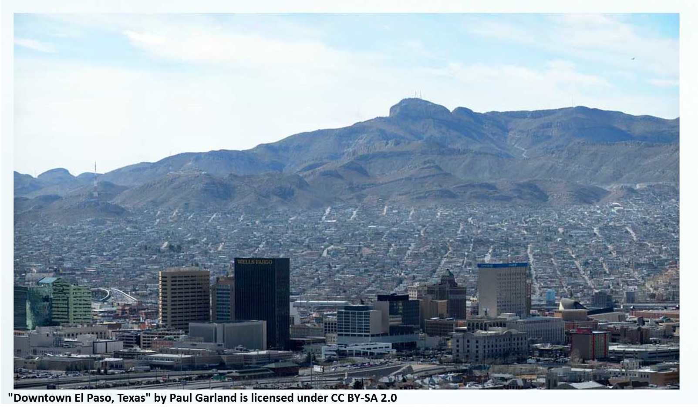
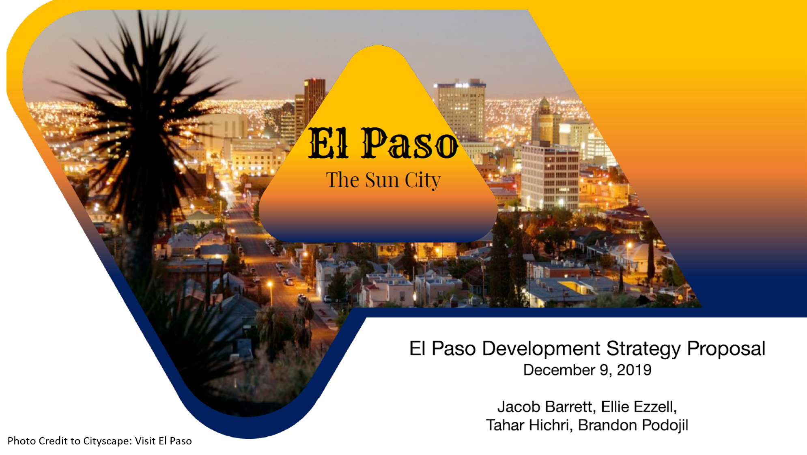
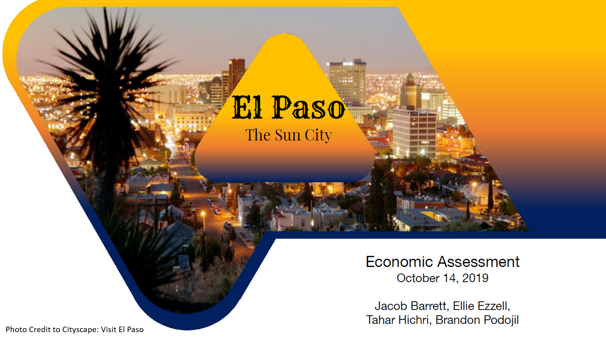
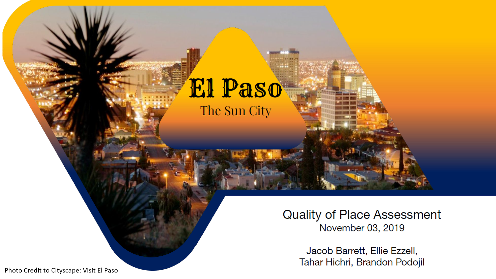

Economic Development Strategy
El Paso, Texas
Overview
Our team conducted a strategic assessment of the city of El Paso, Tx. This comprehensive assessment examined various economic,
social, geographic, political, and demographic characteristics to identify opportunities and challenges for El Paso's economic future.
My team and I developed a three-pronged strategy focusing on El Paso's enterprises, people, and sense of place. Our vision was an El Paso which was focused on
economic opportunities such as the transportation sector, creating and leveraging an education system that ensured the city could train and retain the right
talent for its sectors of advantage, and grow El Paso into a community in which residents love living, working, and playing.

Final written document which outlines our analysis and recommendations.

Final presentation which outlines our analysis and recommendations.

Initial assessment of El Paso's characteristics. Analysis includes determination of benchmark comparison cities, examination of macroeconomic situation, identification of competitive industrial clusters, and creation of three candidate approaches which shaped the eventual strategy.

Assessment of El Paso's quality of place. Analysis includes identification of two challenges facing El Paso: its ability to train and retain a sufficient workforce and issues of growth that is leaving some behind. We also identify two opportunities the city can leverage: its situation as a collaborative cross-border city and its highly appealing quality of place. These together are considered as continue to shape our strategic approach.